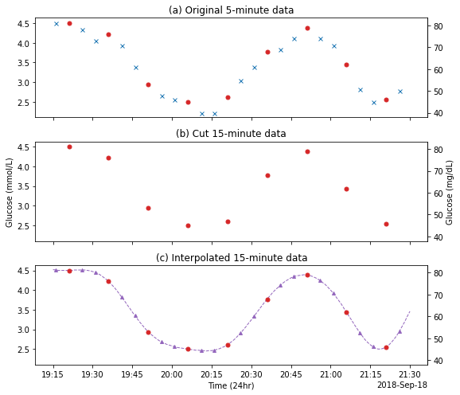

1. Preprocessing#
The purpose of this notebook is to preprocess CGM data from 95 individual files into one complete file containing:
The original 5-minute readings for each individual
Artificially cut 15-minute data from the 5-minute data
Interpolated 5-minute data created from interpolating the 15-minute data with various methods
1.1. Import packages and upload data#
# Import packages and upload dataset
import pandas as pd
import numpy as np
import datetime
import os
from datetime import timedelta as time
from sklearn.gaussian_process import GaussianProcessRegressor
import sklearn.gaussian_process.kernels as k
import warnings
import matplotlib.pyplot as plt
import matplotlib.dates as mdates
import matplotlib as mpl
mpl.style.use('default')
warnings.filterwarnings('ignore')
%matplotlib inline
# Upload directory for individual data
directory = 'C:\\Users\\cr591\\OneDrive - University of Exeter\\Desktop\\PhD\\Projects\\interpolation-for-hypo-detection\\dexcom-maths-exploration\\data\\raw_data\\data-preprocessed'
1.2. Clean and combine CGM files#
def round_time(dt=None, roundTo=60):
"""Round a datetime object to any time lapse in seconds
dt : datetime.datetime object, default now.
roundTo : Closest number of seconds to round to, default 1 minute.
Author: Thierry Husson 2012 - Use it as you want but don't blame me.
"""
dt = dt.to_pydatetime()
seconds = (dt.replace(tzinfo=None) - dt.min).seconds
rounding = (seconds+roundTo/2) // roundTo * roundTo
return dt + datetime.timedelta(0,rounding-seconds,-dt.microsecond)
def combine_frame(filename):
'''
Combines data from all participants into 1 file
'''
# set filepath for each file in directory
filepath = directory + '/' + filename
# Upload cgm dataset for the file
df = pd.read_csv(filepath)
df = df[['timestamp', 'sensorglucose']].dropna(how='all')
df.columns = ['time', 'glc']
# Set ID from filename
ID = filename.replace('.csv', '')
df['ID'] = ID
df['time'] = pd.to_datetime(df['time'])
# Round seconds to zero so minute align
df.time = df.time.apply(lambda x: round_time(x))
# Replace low and high with values
df.glc = pd.to_numeric(df.glc.replace({'Low':2.22, 'High':22.22}))\
.apply(lambda x: 22.22 if x > 22.22 else (2.22 if x < 2.22 else x))
return df
# Map the function to all files in the directory
results = list(map(combine_frame, os.listdir(directory)))
# Concatenate all files to make one dataframe
df_total = pd.concat(results).reset_index(drop=True)
# Functions for determining the British and American glucose axis for the plots
def mmol2mg(x):
return x / 0.0555
def mg2mmol(x):
return x * 0.0555
# Load the dataset
df = pd.read_csv('~/OneDrive - University of Exeter/Desktop/PhD/Projects/interpolation-for-hypo-detection/dexcom-maths-exploration/data/tidy_data/interp_dataset.csv')
df['time'] = pd.to_datetime(df['time'])
# Example of hypo from dataset
sub_df = df.loc[(df.ID == '1004_6months') & (df.time >= '18/09/2018 19:15') &
(df.time <= '18/09/2018 21:30')]
sub_df_5 = sub_df.dropna(subset=['glc'])
# Create matplotlib figure
fig, (ax1, ax2, ax3) = plt.subplots(3, figsize=(8, 7), sharex=True,
sharey=True)
# ax1 - 5-minute or glucose readings
#ax1.plot(sub_df_5.time, sub_df_5.glc, 'x', label='5 min readings',
# markersize=5)
no_15 = sub_df_5[pd.isnull(sub_df_5.cut_glc)]
ax1.plot(no_15.time, no_15.glc, 'x', label='5 min readings', markersize=5)
ax1.plot(sub_df_5.time, sub_df_5.cut_glc, marker='o', color='C3',
linestyle='None', label='15 min readings', markersize=5)
# ax2 - 15-minute glucose readings
ax2.plot(sub_df_5.time, sub_df_5.cut_glc, marker='o', color='C3',
linestyle='None', markersize=5)
# ax3 - interpolated glucose readings
#ax3.plot(no_15.time, no_15.glc, 'x', label='5 min readings', markersize=5)
ax3.plot(sub_df.time, sub_df.polynomial_5, linestyle='--', color='C4',
linewidth=1)
ax3.plot(sub_df_5.time, sub_df_5.cut_glc, linestyle='None', marker='o',
color='C3', markersize=5)
ax3.plot(no_15.time, no_15.polynomial_5, linestyle='None', marker='^',
color='C4', label='Interpolated readings', markersize=4)
# Set a joint legend
lines_labels = [ax.get_legend_handles_labels() for ax in fig.axes]
lines, labels = [sum(lol, []) for lol in zip(*lines_labels)]
#fig.legend(lines, labels)
# Set the axis
for ax in ax1, ax2, ax3:
secax = ax.secondary_yaxis('right', functions=(mmol2mg, mg2mmol))
if ax == ax2:
secax.set_ylabel('Glucose (mg/dL)')
ax1.set_title('(a) Original 5-minute data')
ax2.set_title('(b) Cut 15-minute data')
ax3.set_title('(c) Interpolated 15-minute data')
# Set the axis ticker
locator = mdates.AutoDateLocator()
formatter = mdates.ConciseDateFormatter(locator)
ax1.xaxis.set_major_locator(locator)
ax1.xaxis.set_major_formatter(formatter)
# Set the axis labels
ax2.set_ylabel('Glucose (mmol/L)')
ax3.set_xlabel('Time (24hr)')
fig.tight_layout()
fig.savefig('Fig1.svg')

1.2.1 Drop traces with more than 30% missing data#
def missing(series):
notnulls = pd.notnull(series).count()
perc_complete = notnulls/((7*24*60)/5)*100
return perc_complete
perc_missing = df_total.groupby('ID').apply(lambda group: missing(group.glc))
ids_to_drop = perc_missing[perc_missing<70].index
df_total = df_total.loc[~df_total['ID'].isin(ids_to_drop)]
# Number of people
len(set(df_total.ID.apply(lambda x: x[:4])))
67
1.3. Create 15-minute data#
def resample_data(dataframe):
'''
Resamples the 5-minute glucose data to 15-minute intervals
'''
# List for the indices that will be kept for 15 min dataset
index_list = []
# Create column with the difference between each row
dataframe['diff'] = dataframe.time.diff()
# Set a counter to zero
time_counter = time(minutes=0)
# Loop through all the indices to find ones 15 mins or more apart
for i, row in dataframe.iterrows():
# If it's the first row, add the index to the list
if i == dataframe.index[0]:
index_list.append(i)
continue
# Add the difference between the next row to the time counter
time_counter += dataframe.loc[i]['diff']
# When the counter is up to >14 mins, add the index to the list
if time_counter > time(minutes=14):
index_list.append(i)
# Reset the counter
time_counter = time(minutes=0)
# Create a new column with nan values
dataframe['cut_glc'] = np.nan
# Set the values in cut_glc with the glc values in the index_list
dataframe['cut_glc'].loc[index_list] = dataframe['glc'].loc[index_list]
# Remove the diff column
dataframe.drop(columns='diff', inplace=True)
return dataframe
# Apply the function to each ID
df_total = df_total.groupby('ID').apply(resample_data)
---------------------------------------------------------------------------
KeyboardInterrupt Traceback (most recent call last)
~\AppData\Local\Temp/ipykernel_41276/1974317327.py in <module>
1 # Apply the function to each ID
----> 2 df_total = df_total.groupby('ID').apply(resample_data)
~\Anaconda3\envs\ml_cgm_env\lib\site-packages\pandas\core\groupby\groupby.py in apply(self, func, *args, **kwargs)
1273 with option_context("mode.chained_assignment", None):
1274 try:
-> 1275 result = self._python_apply_general(f, self._selected_obj)
1276 except TypeError:
1277 # gh-20949
~\Anaconda3\envs\ml_cgm_env\lib\site-packages\pandas\core\groupby\groupby.py in _python_apply_general(self, f, data)
1307 data after applying f
1308 """
-> 1309 keys, values, mutated = self.grouper.apply(f, data, self.axis)
1310
1311 return self._wrap_applied_output(
~\Anaconda3\envs\ml_cgm_env\lib\site-packages\pandas\core\groupby\ops.py in apply(self, f, data, axis)
839 # group might be modified
840 group_axes = group.axes
--> 841 res = f(group)
842 if not _is_indexed_like(res, group_axes, axis):
843 mutated = True
~\AppData\Local\Temp/ipykernel_41276/4029973406.py in resample_data(dataframe)
16 continue
17 # Add the difference between the next row to the time counter
---> 18 time_counter += dataframe.loc[i]['diff']
19 # When the counter is up to >14 mins, add the index to the list
20 if time_counter > time(minutes=14):
~\Anaconda3\envs\ml_cgm_env\lib\site-packages\pandas\core\indexing.py in __getitem__(self, key)
929
930 maybe_callable = com.apply_if_callable(key, self.obj)
--> 931 return self._getitem_axis(maybe_callable, axis=axis)
932
933 def _is_scalar_access(self, key: tuple):
~\Anaconda3\envs\ml_cgm_env\lib\site-packages\pandas\core\indexing.py in _getitem_axis(self, key, axis)
1162 # fall thru to straight lookup
1163 self._validate_key(key, axis)
-> 1164 return self._get_label(key, axis=axis)
1165
1166 def _get_slice_axis(self, slice_obj: slice, axis: int):
~\Anaconda3\envs\ml_cgm_env\lib\site-packages\pandas\core\indexing.py in _get_label(self, label, axis)
1111 def _get_label(self, label, axis: int):
1112 # GH#5667 this will fail if the label is not present in the axis.
-> 1113 return self.obj.xs(label, axis=axis)
1114
1115 def _handle_lowerdim_multi_index_axis0(self, tup: tuple):
~\Anaconda3\envs\ml_cgm_env\lib\site-packages\pandas\core\generic.py in xs(self, key, axis, level, drop_level)
3794 return self._values[loc]
3795
-> 3796 new_values = self._mgr.fast_xs(loc)
3797
3798 result = self._constructor_sliced(
~\Anaconda3\envs\ml_cgm_env\lib\site-packages\pandas\core\internals\managers.py in fast_xs(self, loc)
964 result = ensure_wrapped_if_datetimelike(result)
965
--> 966 for blk in self.blocks:
967 # Such assignment may incorrectly coerce NaT to None
968 # result[blk.mgr_locs] = blk._slice((slice(None), loc))
KeyboardInterrupt:
df_total.head()
1.4. Interpolate 15-minute dataset#
Interpolate the 15-minute data using various methods
def resampleDf(df_id):
'''
Resample dataset to 1 min intervals
'''
# Drop duplicates
df_id = df_id[~df_id['time'].duplicated(keep='first')]
# Set time as datetime index
df_id.set_index('time', inplace=True)
# Resample to 1 minute intervals
df_id = df_id.resample(rule='min', origin='start').asfreq()
return df_id
# Apply resample functin to each ID
results = df_total.groupby('ID').apply(resampleDf)
# Reset index
results = results.drop('ID', axis=1).reset_index()
results.head(16)
1.4.1. Interpolate using Pandas SciPy wrappers#
def interpolate(resampled_dataframe, method, limit, order=5):
'''
Interpolate a resampled series with a method of choice from the Pandas
interpolation wrapper
'''
# If the method is polynomial or spline, an order needs to be given
if (method == 'polynomial') | (method == 'spline'):
interp_series = resampled_dataframe.interpolate(method=method,
limit_area='inside',
limit_direction='forward',
limit=limit, order=order)
# Else no order is needed
else:
interp_series = resampled_dataframe.interpolate(method=method,
limit_area='inside',
limit_direction='forward',
limit=limit)
return interp_series
1.4.2. Interpolation with Gaussian process regression#
def gp_interp(resampled_dataframe):
'''
Interpolate using SciKit Learn's implementation of Gaussian Process (GP)
using RBF, rational quadratic and Matern kernels
'''
# Create a timestamp for the GP
resampled_dataframe['timestamp'] = resampled_dataframe.time.apply(lambda x: x.timestamp())
# Y_train is the 15-minute glucose data
Y_train = resampled_dataframe.dropna().cut_glc
# X_train is the timestamp in 2d form for the 15-min data
X_train = np.atleast_2d(resampled_dataframe.dropna(subset=['cut_glc']).timestamp).T
# X_test is the 1-min data we are predicting
X_test = resampled_dataframe.timestamp
# Y_test is the 1-min glucose data
Y_test = resampled_dataframe.glc
# Declare the kernels and set the length scale bounds
rbf = k.RBF(length_scale=1, length_scale_bounds= (400, 900))
rq = k.RationalQuadratic(length_scale=1, length_scale_bounds= (400, 900),
alpha=0)
matern = k.Matern(length_scale=1, length_scale_bounds= (400, 900), nu=3.5)
kernels = {'matern': matern, 'rq': rq, 'rbf': rbf}
# For each of the kernels, fit a GP to predict the missing values
for kernel in kernels:
# Declare GP
gp = GaussianProcessRegressor(kernel=kernels[kernel], alpha=0,
n_restarts_optimizer=4)
# Fit to 15-min data
gp.fit(X_train, Y_train)
# Predict 1-min data
y_mean= gp.predict(X_test[:, None]) #, return_std=True)
# Create new column in the dataframe to fit predicted values
resampled_dataframe[kernel] = y_mean
return resampled_dataframe
1.4.3. Combine all methods to create interpolated dataset#
def combine_interpolation_frames(dataframe):
'''
Combine all interpolation methods into one dataframe
'''
# All the interpolation methods to be used
interp_methods = ['pchip', 'linear', 'cubicspline', 'akima', 'polynomial']
# 15-minute data will be used for interpolation
col = dataframe.cut_glc
# Limit is 15 minutes for interpolation
limit = 15
# Run each method through the interpolate function
for method in interp_methods:
if method != 'polynomial':
name = method
dataframe[name] = interpolate(col, method, limit)
else:
# Use 3 different orders for the polynomial interpolation
for i in [3, 5, 7]:
name = method + '_' + str(i)
dataframe[name] = interpolate(col, method, limit, order=i)
# Interpolate using gaussian process interpolation
dataframe = gp_interp(dataframe)
return dataframe
total_results = results.groupby('ID').apply(combine_interpolation_frames)
total_results.head()
# Make sure there's no nan values in the interpolation
total_results.dropna(subset=['pchip'], inplace=True)
# Reset the index and round to 2 decimal places to match the CGM readings
total_results.reset_index(drop=True, inplace=True)
total_results = total_results.round(2)
# Drop nan values in the 5-min data to get 5 min rather than 1 min data
total_results.dropna(subset=['glc']).head()
| ID | time | glc | cut_glc | pchip | linear | cubicspline | akima | polynomial_3 | polynomial_5 | polynomial_7 | timestamp | matern | rq | rbf | |
|---|---|---|---|---|---|---|---|---|---|---|---|---|---|---|---|
| 0 | 1003_6months | 2018-09-21 14:52:00 | 9.99 | 9.99 | 9.99 | 9.99 | 9.99 | 9.99 | 9.99 | 9.99 | 9.99 | 1.537542e+09 | 9.99 | 9.99 | 9.99 |
| 5 | 1003_6months | 2018-09-21 14:57:00 | 10.16 | NaN | 9.95 | 9.88 | 10.31 | 10.10 | 10.31 | 10.63 | 10.81 | 1.537542e+09 | 10.49 | 10.02 | 10.47 |
| 10 | 1003_6months | 2018-09-21 15:02:00 | 9.88 | NaN | 9.83 | 9.77 | 10.15 | 10.01 | 10.15 | 10.35 | 10.45 | 1.537542e+09 | 10.27 | 9.92 | 10.29 |
| 15 | 1003_6months | 2018-09-21 15:07:00 | 9.66 | 9.66 | 9.66 | 9.66 | 9.66 | 9.66 | 9.66 | 9.66 | 9.66 | 1.537542e+09 | 9.66 | 9.66 | 9.66 |
| 20 | 1003_6months | 2018-09-21 15:12:00 | 9.16 | NaN | 9.14 | 8.96 | 8.97 | 8.99 | 8.97 | 8.86 | 8.82 | 1.537543e+09 | 8.88 | 9.01 | 8.87 |
total_results.to_csv('interp_dataset.csv', index=False)
total_results = total_results.loc[~total_results['ID'].isin(ids_to_drop)]